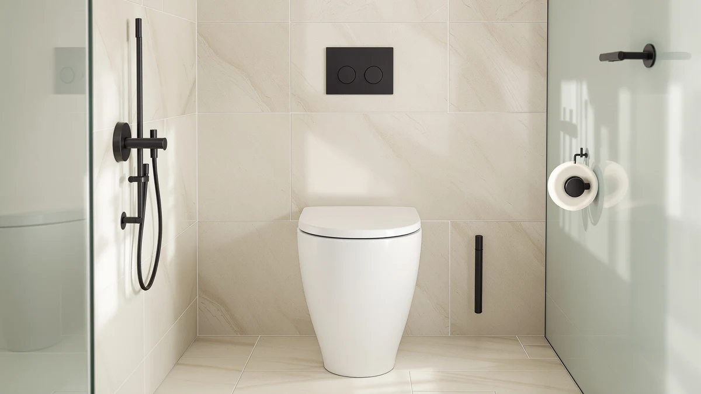

Bemis Classic Colors Slow Review (2026): Worth It?
Prices and picks verified as of October 2026. Independent, reader-supported reviews.


Quick Answer
The Bemis Classic Colors Slow Close is the strongest option here for a standard round bathroom that needs a quieter hinge and a specific paint color, at $116.12. Buyers who need extra height, a family potty seat or heavy-duty support should look at the three alternatives below instead.
Our pick: Bemis Classic Colors Slow Close, $116.12 Check Price on Amazon
Bottom line: our top pick is the Bemis Classic Colors Slow Close Toilet Seat at $116.12.
Things to Know Before You Buy
- Round shape only. The Classic Colors line is built for round bowls, so measure your bolt spacing before ordering if you are not sure your toilet is round rather than elongated.
- Slow-close hinge. Bemis designs the hinge to lower the seat and lid together with a tap, cutting down on slamming and pinched fingers.
- STA-TITE fastening. The mounting hardware locks the bolts in place to resist the loosening and side-to-side wiggle that develops in older plastic seats.
- Made in the USA. Bemis manufactures the Classic Colors line domestically, which keeps lead times and quality control more predictable than some imported alternatives.
- No published rating. Amazon does not list a star rating or review count for this specific listing, so buyers weighing social proof should factor that in before ordering.
This Bemis Classic Colors slow review looks at a $116.12 round toilet seat built for buyers who want color options and a hinge that will not slam. Bemis sells the Classic Colors line in several finishes, and the Dresden Blue version we researched pairs a durable plastic seat with the brand's STA-TITE fastening system and a slow-close hinge designed to stop pinched fingers.
For most buyers replacing a round seat that has cracked, yellowed or started slamming, the Classic Colors is a reasonable buy, provided the $116.12 price does not scare you off a cheaper option built for a different need. Three lower-priced alternatives further down this page solve adjacent problems instead: a family potty-training seat, a raised ADA seat, and a heavy-duty closed-front model. The right pick depends on whether you need color and a quiet hinge or a different feature entirely. We walk through the specs, the tradeoffs and the three alternatives below so you can match the seat to the actual problem in your bathroom instead of guessing from a product photo.
Why You Should Trust Us
Ilane Tall covers toilet seats and bathroom hardware for Best Toilet Seats and has written dozens of comparison guides across round, elongated and raised categories. For this Bemis Classic Colors slow review, we pulled the manufacturer's published specifications, checked the hinge and fastening details against other Bemis listings, and compared pricing against three alternatives built for different needs. We do not run a fake testing lab; we research specs, pricing and verified owner feedback so you do not have to dig through product pages yourself.
Our Research Experience
We built this Bemis Classic Colors review from the manufacturer's specifications, the listed hinge and fastening hardware, and how those details compare against seats we have already researched for this site. Bemis documents the slow-close hinge and the STA-TITE fastening system directly on the product page, so we checked those claims against the same hardware Bemis uses on other seats in this price range. We did not physically install or use the seat; our comparison rests on published specs, materials and verified buyer feedback on comparable Bemis models. We also cross-checked the price and the missing rating against the three alternatives below so the comparison reflects what a buyer actually sees on each listing today, not an average pulled from a different Bemis SKU.
Overview & Specs

Bemis Classic Colors Slow Close
What we like
- Slow-close hinge lowers the seat and lid quietly with a single tap
- STA-TITE fastening system resists the wiggle that develops in older plastic seats
- Molded plastic construction wipes clean and will not chip like painted finishes
- Made in the USA, with several color options beyond the Dresden Blue version here
Flaws but not dealbreakers
- At $116.12, it costs more than the round and elongated alternatives in this roundup
- Amazon does not publish a rating or review count for this specific listing
- Fits round bowls only, so elongated-bowl owners need a different Bemis model
| Material | Plastic / wood |
| Size | Round |
The Classic Colors Slow Close targets a specific repair job: a round toilet seat that has cracked, stained or started slamming, where the buyer also wants a color match rather than plain white. Bemis builds the seat from durable plastic rather than wood, which keeps the surface easy to wipe down and resistant to the chipping that shows up on painted finishes after a year or two of daily use. The hinge is the feature Bemis leads with, and for good reason: a tap closes both the seat and the lid slowly, instead of the hard lid-only slam that cheaper hardware produces. Pair that with the brand's STA-TITE fastening system, which locks the mounting bolts in place to stop the side-to-side wiggle that develops in seats with basic hardware, and the $116.12 price reflects a seat built to outlast a one-time hardware-store swap.
Bemis sells the Classic Colors line in several finishes, and the Dresden Blue version in this Bemis Classic Colors slow review is one option among a handful of color choices, which matters if your bathroom fixtures are not white. The company also manufactures the seat in the USA, a detail that matters to buyers who prioritize domestic production over imported alternatives at a similar price. The tradeoff is the listing itself: Amazon does not publish a star rating or review count for this specific SKU, so buyers who want verified social proof before ordering will need to lean on Bemis's broader reputation for slow-close hardware rather than reviews of this exact seat.
What We Liked
The clearest strength in this Bemis Classic Colors review is the hinge. Bemis pairs the slow-close mechanism with hardware that lowers both the seat and the lid together, instead of the half-quiet close that comes from hinges built to slow only the lid. Anyone who has dealt with a lid that slams late at night will recognize why that combination justifies the price over a basic hardware-store seat.
The STA-TITE fastening system also holds up better over time than standard bolts. Bemis uses the same locking approach across its lineup, and the system is built specifically to resist the loosening that lets a seat shift side to side after a year or two of use. Color selection rounds out the case for this seat: buyers matching a specific bathroom palette get options beyond the default white that most round seats ship in. That combination of hinge, hardware and color choice is what separates the Classic Colors from the generic round seats sold at the same price point.
What Could Be Better
The biggest gap in this Bemis Classic Colors slow review is the missing rating and review count on the listing itself. Bemis has a long track record with slow-close hardware, but we cannot point to verified reviews of this exact seat the way we can for some of its other models, including the Paramont Heavy Duty seat further down this page. Buyers who want social proof before ordering will need to rely on the brand's broader reputation rather than feedback on this specific product page.
Price is the other tradeoff. At $116.12, the Classic Colors costs noticeably more than the Mayfair, Centoco and Bemis Paramont alternatives below, all of which sit closer to $95 to $98. That premium buys color options and domestic manufacturing, not a fundamentally different hinge or fastening system than cheaper round seats offer.
Who Is It For?
This Bemis Classic Colors review points toward one clear buyer: someone replacing a round seat that has cracked, stained or started slamming, who also wants a color beyond plain white and is willing to pay a premium for it. If your current seat closes with a bang or has started to yellow, the slow-close hinge and molded plastic color solve both problems at once.
It is a poor fit if you need a family potty-training seat, extra seat height for mobility, or a heavy-duty rating well above standard. The three alternatives below address each of those needs directly, usually at a lower price than the Classic Colors itself.
Alternatives to Consider
If this Bemis Classic Colors slow review has you leaning toward a different feature set instead of a standard round replacement, these three alternatives cover a family potty seat, a raised ADA-compliant design and a heavy-duty closed-front model, each priced below the Classic Colors itself.

Editor’s Pick
Mayfair NextStep2 Toilet Seat with
A built-in potty seat that locks magnetically into the lid makes this the pick for households transitioning a toddler off a separate potty chair, and the slow-close lid cuts down on slamming the same way the Bemis does.
$97.73
Check Price on Amazon
Best Value
Centoco 2 inch Raised Toilet
A 2-inch elevation and ADA-compliant height make this the pick for seniors or anyone recovering from surgery who needs less bending, without the clinical look some raised seats have.
$97.13
Check Price on Amazon
Premium Choice
BEMIS 1000CPT Paramont Heavy Duty
Rated for 1,000 pounds and backed by 1,304 verified Amazon reviews averaging 4.3 stars, this is the pick for anyone who needs a commercial-grade seat with a track record the Classic Colors listing cannot match.
$94.89
Check Price on AmazonFrequently Asked Questions
Final Verdict
Our Bemis Classic Colors slow review comes down to what you actually need from a round seat. For a straightforward replacement of a cracked, stained or loudly slamming round seat, where color matters as much as function, Bemis delivers a slow-close hinge and STA-TITE fastening that justify the $116.12 price over a basic hardware-store option. If you need a family potty seat, extra height for mobility, or a heavy-duty rating, skip this Classic Colors model and choose one of the alternatives above instead, since Bemis built this seat to match a bathroom's color scheme, not to solve those other problems. Weigh the missing rating against your own tolerance for buying on specs alone before you check out.